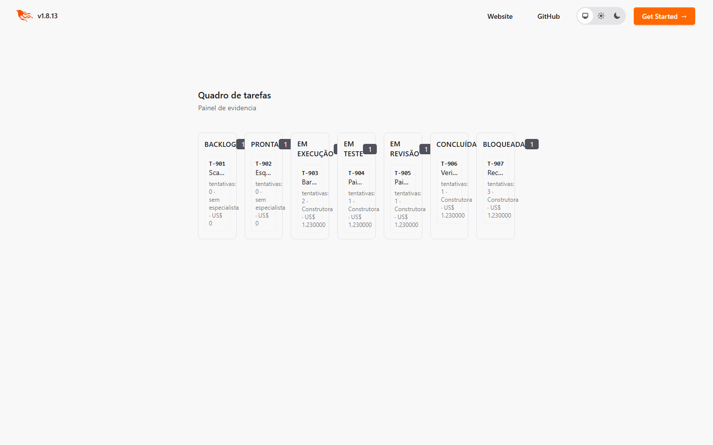
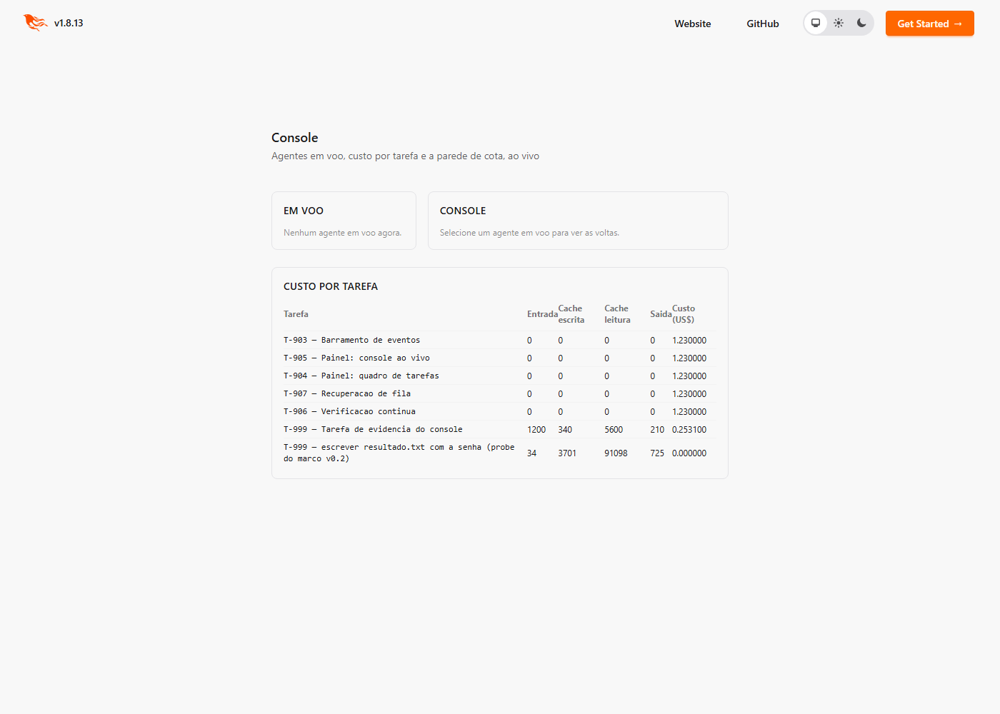
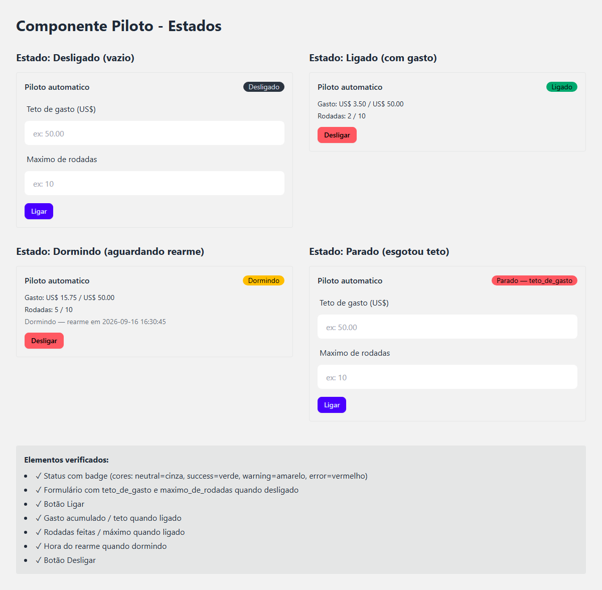

Enzo Consulo · dados de 07/10/2026 11:22 · commit ced37e9
Um sistema multi-agente não falha por escrever mal, e sim por governar mal. A proposta é tirar as regras do texto do pedido e colocá-las na estrutura do programa, onde deixam de ser opcionais.
| A regra | Onde ela mora |
|---|---|
| Não escrever fora do projeto | a ferramenta de escrita recusa o caminho |
| No máximo três tentativas | contador no banco, que o agente não altera |
| Quem constrói não aprova | o revisor não recebe ferramenta de escrita |
| Não estourar o orçamento | o sistema não deixa começar o que não cabe |
Status das tarefas: concluída 102, pronta 8, backlog 3, bloqueada 2. Suíte completa nesta máquina: 1293 testes, 2 falhas.
| E1 | Planejamento e arquitetura | ◐ Entregue — falta definir os 5 projetos de teste |
| E2 | Fundação do sistema | ✓ Concluída — entrega aprovada |
| E3 | O agente e as ferramentas | ✓ Concluída — entrega aprovada (etapa atual do calendário) |
| E4 | Linha de produção de tarefas | ✓ Construída e provada (adiantada em relação ao calendário) |
| E5 | Paralelismo e tolerância a falhas | ✓ Construída e provada (adiantada em relação ao calendário) |
| E6 | Memória do projeto | ✕ Peças construídas — marco bloqueado |
| E7 | Painel e automação | ◐ Telas e automação construídas — marco final em andamento |
Entrega combinada: Requisitos, arquitetura, tarefas, critérios e projetos de teste aprovados.
Verde: entrega aprovada · amarelo: construída com pendência · vermelho: entrega bloqueada · contorno: esta etapa
| Pacote | O que é | Situação | Tarefas |
|---|---|---|---|
| 1.1 | Requisitos R1–R15 escritos no plano, cada um com etapa e forma de verificar | ✓ feito | |
| 1.2 | Estado da arte estudo de estado da arte e relatório de originalidade (documentos/) | ✓ feito | |
| 1.3 | Arquitetura documento de arquitetura: 4 camadas, 6 estados, 2 portões, escada de falha | ✓ feito | |
| 1.4 | Tarefas e critérios tarefas escritas no repositório + os 8 critérios de desempenho | ✓ feito |
Entrega combinada: Os testes rodam sem internet e sem consumir o serviço do modelo.
Verde: entrega aprovada · amarelo: construída com pendência · vermelho: entrega bloqueada · contorno: esta etapa
| Pacote | O que é | Situação | Tarefas |
|---|---|---|---|
| 2.1 | Ambiente projeto com verificação de qualidade em um comando | ✓ 2/2 concluídas | T-001, T-007 |
| 2.2 | Banco e custo esquema do banco e contabilidade em duas unidades | ✓ 2/2 concluídas | T-002, T-005 |
| 2.3 | Fronteiras fronteira do modelo e da busca, com substitutos de teste | ✓ 2/2 concluídas | T-003, T-004 |
| 2.4 | Cópia de segurança backup e restauração com ida-e-volta provada | ✓ 1/1 concluídas | T-006 |
| Entrega | Marco da etapa a suíte inteira roda sem rede e sem cota | ✓ 1/1 concluídas | T-009 |
* custo e despachos contam só as rodadas registradas pelo painel (dólar-equivalente da cota, não fatura).
Commit de fechamento: 28f0303.
nenhuma — todas aprovadas de primeira
Critério de desempenho “pouco retrabalho”: média ≤ 2 execuções por tarefa. Nesta etapa: 1,0.
| R10 | Contar o custo em cota consumida e em dinheiro tabela consumos alimentada a cada resposta; cota e US$ separados | ✓ atendido |
| R12 | Testes sem internet e sem consumir o serviço do modelo teste que FALHA se houver tráfego de rede ou chave de acesso no ambiente | ✓ atendido |
mix test test/fabrica/marco_v01_test.exs
✓ 15 testes, 0 falhas rodado nesta máquina em 07/10/2026 em 0,9 s
Entrega combinada: Um agente resolve uma tarefa real com o custo gravado, e trocar de fornecedor não mexe no núcleo.
Verde: entrega aprovada · amarelo: construída com pendência · vermelho: entrega bloqueada · contorno: esta etapa
| Pacote | O que é | Situação | Tarefas |
|---|---|---|---|
| 3.1 | Ferramentas arquivo e comando (com prazo e morte da árvore de processos), resumo do projeto, registrar resultado | ✓ 7/7 concluídas | T-010, T-011, T-012, T-013, T-013a, T-013b, T-016 |
| 3.2 | Confinamento a ferramenta recusa caminho fora do projeto; o shell do agente roda em sandbox | ✓ 9/9 concluídas | T-012a, T-014, T-079, T-080, T-081, T-082, T-083, T-090, T-099 |
| 3.3 | Agente supervisionado o agente como processo supervisionado, com teto de chamadas por papel | ✓ 5/5 concluídas | T-015, T-017, T-017a, T-017b, T-020a |
| 3.4 | Adaptadores dois fornecedores atrás da mesma fronteira, com o controle de cada um MEDIDO antes | ✓ 8/8 concluídas | T-003a, T-018, T-018a, T-018b, T-018c, T-018d, T-018e, T-019 |
| Entrega | Marco da etapa agente real resolve tarefa real, custo por volta gravado | ◐ 2/3 concluídas | T-020, T-020b, T-100 |
| Adiado | Marco 2 (cache) medir o cache com a API por token — depende de chave de acesso | ◐ 0/1 concluídas | T-020c |
* custo e despachos contam só as rodadas registradas pelo painel (dólar-equivalente da cota, não fatura).
Commit de fechamento: 172e15f.
T-090 (2×), T-099 (2×), T-018b (2×), T-018d (2×), T-018e (2×), T-020b (2×)
Critério de desempenho “pouco retrabalho”: média ≤ 2 execuções por tarefa. Nesta etapa: 1,19.
| R11 | Nenhum agente escreve fora da pasta do projeto Confinamento recusa absoluto, .., link, UNC e dispositivo; fuzz de 7.500 consultas no Linux: 0 fugas. No Windows: fuga por ciclo de junções achada e fechada em 07/10 (T-099) | ✓ atendido |
| R15 | Trocar o fornecedor do modelo sem mexer no núcleo dois adaptadores ( ClaudeCLI, MessagesAPI) atrás de Fabrica.Operario; núcleo intocado | ✓ atendido |
mix run priv/probes/marco_v02_agente.exs # consome ~27 mil tokens da cota
Entrega combinada: Uma tarefa percorre os seis estados, é reprovada de propósito, é refeita e conclui.
Verde: entrega aprovada · amarelo: construída com pendência · vermelho: entrega bloqueada · contorno: esta etapa
| Pacote | O que é | Situação | Tarefas |
|---|---|---|---|
| 4.1 | Seis estados máquina de estados; estado, relatório e custo numa transação | ✓ 3/3 concluídas | T-021, T-022, T-022a |
| 4.2 | Fila e equipe promoção por dependências; especialistas sob demanda | ✓ 2/2 concluídas | T-023, T-024 |
| 4.3 | Critérios de aceite critérios executados sozinhos, com allowlist | ✓ 3/3 concluídas | T-025, T-026, T-027 |
| 4.4 | Os dois portões verificador e revisor; o revisor sem ferramenta de escrita | ✓ 4/4 concluídas | T-028, T-075, T-077, T-078 |
| 4.5 | Diagnóstico decidir COMO refazer; escada de falha; teto de gasto | ✓ 4/4 concluídas | T-029, T-030, T-031, T-032 |
| R1 | Do pedido às tarefas planejador: pedido em linguagem natural → grafo de tarefas | ✓ 2/2 concluídas | T-068, T-069 |
| Entrega | Marco da etapa seis estados, reprovação de propósito, refeita, concluída | ✓ 1/1 concluídas | T-034 |
* custo e despachos contam só as rodadas registradas pelo painel (dólar-equivalente da cota, não fatura).
Commit de fechamento: 8cba027.
nenhuma — todas aprovadas de primeira
Critério de desempenho “pouco retrabalho”: média ≤ 2 execuções por tarefa. Nesta etapa: 1,0.
| R1 | Transformar a descrição de um projeto em especificação, plano e tarefasmix fabrica.planejar gera as tarefas; falta rodar num pedido real de ponta a ponta | ◐ parcial |
| R2 | Levar cada tarefa por seis estados, registrando relatório e custo histórico medido: pronta → execução → teste → execução → teste → revisão → concluída | ✓ atendido |
| R3 | Julgar toda entrega duas vezes: se funciona e se é o que foi pedido dois portões independentes; reprovação por conformidade sem defeito nenhum | ✓ atendido |
| R4 | Devolver a entrega reprovada com o que faltou e decidir como refazer diagnóstico decide como refazer; 2º ciclo sobe de modelo | ✓ atendido |
| R5 | Limitar o retrabalho: replanejar uma vez e, se falhar, passar ao humano escada de 4 degraus; contador no banco | ✓ atendido |
| R14 | Nenhuma rodada passa do teto de gasto teto por rodada e por tarefa: impede começar, nunca corta no meio | ✓ atendido |
mix test test/fabrica/marco_v03_test.exs
✓ 1 testes, 0 falhas rodado nesta máquina em 07/10/2026 em 1,1 s
mix test test/fabrica/marco_v03_test.exs).Entrega combinada: Três tarefas em paralelo; encerrar uma no meio não afeta as outras, e ela volta à fila.
Verde: entrega aprovada · amarelo: construída com pendência · vermelho: entrega bloqueada · contorno: esta etapa
| Pacote | O que é | Situação | Tarefas |
|---|---|---|---|
| 5.1 | Supervisão um processo supervisionado por tarefa | ✓ 2/2 concluídas | T-035, T-036 |
| 5.2 | Fila durável fila no banco: enfileirar e mudar estado na mesma transação | ✓ 1/1 concluídas | T-037 |
| 5.3 | Paralelismo áreas como exclusão mútua; limite pelo perfil de 8 GB | ✓ 2/2 concluídas | T-038, T-038a |
| 5.4 | Limite de uso reconhecer a parede de cota, dormir e rearmar | ✓ 4/4 concluídas | T-039, T-039a, T-087, T-091 |
| 5.5 | Recuperação recuperar trabalho interrompido pela árvore git | ✓ 1/1 concluídas | T-040 |
| Entrega | Marco da etapa três em paralelo; matar uma não derruba as outras | ✓ 1/1 concluídas | T-041 |
* custo e despachos contam só as rodadas registradas pelo painel (dólar-equivalente da cota, não fatura).
Commit de fechamento: dfd4791.
T-036 (2×), T-038 (2×), T-039 (2×), T-087 (3×), T-040 (2×)
Critério de desempenho “pouco retrabalho”: média ≤ 2 execuções por tarefa. Nesta etapa: 1,55.
| R6 | Executar tarefas independentes em paralelo, sem disputa de arquivo três agentes em voo confirmados pelo Registry, áreas disjuntas | ✓ atendido |
| R13 | A queda de um agente não derruba os outros nem perde trabalho matar um agente: os outros seguem, o morto volta à fila sem perder consumo | ✓ atendido |
mix test test/fabrica/marco_v04_test.exs
✓ 2 testes, 0 falhas rodado nesta máquina em 07/10/2026 em 3,8 s
mix test test/fabrica/marco_v04_test.exs).Entrega combinada: O agente cita a decisão anterior, com a fonte certa, em vez de decidir de novo.
Verde: entrega aprovada · amarelo: construída com pendência · vermelho: entrega bloqueada · contorno: esta etapa
| Pacote | O que é | Situação | Tarefas |
|---|---|---|---|
| 6.1 | Medição da busca medir memória e tempo antes de escolher onde a busca roda | ✓ 1/1 concluídas | T-042 |
| 6.2 | Histórico guardar o histórico a cada commit | ✓ 1/1 concluídas | T-043 |
| 6.3 | Busca híbrida por significado e por termo exato, escolhida por medição | ✓ 2/2 concluídas | T-044, T-065 |
| 6.4 | Contexto com fonte o bloco recuperado com a fonte citada | ◐ 1/2 concluídas | T-046, T-101 |
| 6.5 | Avaliação recall e MRR do conjunto de avaliação | ✓ 1/1 concluídas | T-047 |
| Busca local | Modelo de embedding embedding local (Ollama) com dimensão conferida | ✓ 7/7 concluídas | T-045, T-059, T-060, T-061, T-062, T-063, T-064 |
| Entrega | Marco da etapa o agente cita a decisão anterior | ✕ 0/1 concluídas | T-048 |
* custo e despachos contam só as rodadas registradas pelo painel (dólar-equivalente da cota, não fatura).
Commit de fechamento: ced37e9.
T-042 (2×), T-065 (3×), T-046 (2×), T-047 (2×), T-045 (4×), T-059 (2×)
Critério de desempenho “pouco retrabalho”: média ≤ 2 execuções por tarefa. Nesta etapa: 1,69.
| R7 | Consultar o histórico do projeto antes de decidir, citando a fonte busca e bloco com fonte existem, mas o bloco ainda não chega ao prompt do agente | ✕ pendente |
| R9 | Rodar em 8 GB de memória e 4 núcleos busca escolhida por medição; o pico com 3 em paralelo ainda não foi medido | ◐ parcial |
Sem demonstração executável nesta etapa.
Fabrica.Memoria.Contexto ao despacho do agente.Entrega combinada: Um projeto inteiro acompanhado na tela, do pedido à entrega, com o custo em tempo real.
Verde: entrega aprovada · amarelo: construída com pendência · vermelho: entrega bloqueada · contorno: esta etapa
| Pacote | O que é | Situação | Tarefas |
|---|---|---|---|
| 7.1 | Medidas de execução barramento de eventos e telemetria por despacho | ✓ 1/1 concluídas | T-050 |
| 7.2 | Quadro e console quadro por estado e console do agente, ao vivo, com custo | ✓ 2/2 concluídas | T-051, T-052 |
| 7.3 | Parar e retomar um botão que encerra um processo supervisionado | ✓ 1/1 concluídas | T-053 |
| 7.4 | Rodadas automáticas piloto automático com teto de gasto | ✓ 2/2 concluídas | T-054, T-055 |
| 7.x | Entregas não-código trilha genérica e escada de prova | ✓ 1/1 concluídas | T-056 |
| 7.5 | Segredos varredura de segredos antes de publicar | ✓ 1/1 concluídas | T-057 |
| Integração | Agente real de ponta a ponta a fila sobe o agente real; custo real bate com o fornecedor | ✓ 12/12 concluídas | T-066, T-067, T-070, T-071, T-072, T-073, T-074, T-084, T-085, T-086, T-088, T-089 |
| Abertas | Corretivas (rodando hoje) prontas para o motor | ◐ 0/7 concluídas | T-092, T-093, T-094, T-095, T-096, T-097, T-098 |
| Abertura | Conferir o plano o que a tela precisa mostrar e a medição final | ◐ 0/1 concluídas | T-049 |
| Entrega | Marco final um projeto inteiro, sem intervenção | ✕ 0/1 concluídas | T-058 |
* custo e despachos contam só as rodadas registradas pelo painel (dólar-equivalente da cota, não fatura).
Commit de fechamento: ced37e9.
T-050 (2×), T-051 (2×), T-055 (2×), T-057 (2×), T-066 (2×), T-067 (2×), T-070 (3×), T-088 (2×)
Critério de desempenho “pouco retrabalho”: média ≤ 2 execuções por tarefa. Nesta etapa: 1,45.
| R8 | Mostrar andamento, custo e saída dos agentes, ao vivo quadro, console e custo ao vivo existem; falta o projeto inteiro acompanhado (marco) | ◐ parcial |
Sem demonstração executável nesta etapa.



18/12/2026 – 01/01/2027
| 8.1 Projetos de teste | escrever os 5 projetos (pendência herdada da E1) |
| 8.2 Medição | instrumentar a medição dos 8 critérios — ainda não há tarefa para isso |
| 8.3 Máquina de 8 GB | medir o pico com 3 tarefas em paralelo |
| 8.4 Falhas provocadas | matar agente e derrubar o banco no meio de uma rodada real |
| Critério | Atingido quando | |
|---|---|---|
| Constrói sozinho | ≥ 3 dos 5 projetos de teste sem intervenção | ✕ a medir |
| Conclui as tarefas | ≥ 80% das tarefas concluídas | ✕ a medir |
| Pouco retrabalho | ≤ 2 execuções por tarefa concluída | ✕ a medir |
| Não aprova errado | nenhuma concluída falha ao ser verificada de novo | ✕ a medir |
| Governa de verdade | todas as tentativas de quebrar as 4 regras barradas | ✕ a medir |
| Aguenta falha | agente morto / banco derrubado sem perder trabalho | ✕ a medir |
| Custo sob controle | nenhuma rodada passa do teto de gasto | ✕ a medir |
| Cabe na máquina | pico ≤ 8 GB com 3 tarefas em paralelo | ✕ a medir |